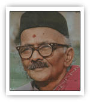

|

|
| ಜನನ |
31 ಜನವರಿ 1896, ಧಾರವಾಡ
|
| ವೃತ್ತಿ |
ಪ್ರಮುಖ ಪಾತ್ರಗಳು
ಕವಿ, ಪ್ರಾಧ್ಯಾಪಕ, ತಾತ್ವಿಕ ಚಿಂತಕ
- ಧಾರವಾಡ ಮತ್ತು ಮೈಸೂರಿನ ಪ್ರಮುಖ ವಿದ್ಯಾಸಂಸ್ಥೆಗಳಲ್ಲಿ ಶಿಕ್ಷಕ
- ಭಾವಕಾವ್ಯದ ಪ್ರಮುಖ ಮುಖವಾಡ
- ಭಾಷೆಯ ಸಂಗೀತಮಯ ಶೈಲಿಯನ್ನು ಕವಿತೆಯಲ್ಲಿ ಬಳಸಿದವರು
- ಜನಜೀವನದ ಭಾವನೆಗಳನ್ನು ಹೃದಯಸ್ಪರ್ಶಿಯಾಗಿ ಚಿತ್ರಿಸಿದವರು
|
| ಪ್ರಶಸ್ತಿ |
ಗೌರವಗಳು ಮತ್ತು ಪ್ರಶಸ್ತಿಗಳು
- ಜ್ಞಾನಪೀಠ ಪ್ರಶಸ್ತಿ (1972)
- ಪದ್ಮಶ್ರೀ ಪ್ರಶಸ್ತಿ
- ಸಾಹಿತ್ಯ ಅಕಾಡೆಮಿ ಪ್ರಶಸ್ತಿ — “ನಾಕುತಂತಿ” ಕೃತಿಗೆ
- ಕರ್ನಾಟಕ ಸಾಹಿತ್ಯ ಅಕಾಡೆಮಿ ಗೌರವ ಪ್ರಶಸ್ತಿ
- ಕೃತಿಗಳು ಅನೇಕ ಭಾಷೆಗಳಿಗೆ ಅನುವಾದಗೊಂಡಿವೆ
|
| ಮರಣ |
ಅಂತ್ಯ ಮತ್ತು ಪರಂಪರೆ
26 ಅಕ್ಟೋಬರ್ 1981, ಧಾರವಾಡ
- ಕನ್ನಡ ಸಾಹಿತ್ಯ ಲೋಕಕ್ಕೆ ಅಪಾರ ನಷ್ಟ
- ಧಾರವಾಡದ “ಬೆಂದ್ರೆ ಭವನ” — ಸಾಹಿತ್ಯಾಸಕ್ತರ ಪ್ರಮುಖ ತೀರ್ಥಕ್ಷೇತ್ರ
- ನವೋದಯ ಚಳವಳಿ ಬೆಳೆಸಿದ ಮಹತ್ವದ ವ್ಯಕ್ತಿ
|
| ಸಂಕ್ಷಿಪ್ತ ವಿವರಣೆ |
ಸಾರಾಂಶ (ಸಾಹಿತ್ಯ ಮತ್ತು ಶೈಲಿ)
“ಅಂಬಿಕಾತನಯದತ್ತ” ಎಂಬ ತಖಲ್ಲುಸಿಗೆ ಪ್ರಸಿದ್ಧರಾದ ಡಿ. ಆರ್. ಬೆಂದ್ರೆ:
- ಭಾವ, ಭಕ್ತಿ, ಪ್ರಕೃತಿ, ತತ್ತ್ವಶಾಸ್ತ್ರಗಳ ಸಮನ್ವಯ
- ಭಾಷೆಯ ಲಯ ಮತ್ತು ಸಂಗೀತವನ್ನು ಕಾವ್ಯದಲ್ಲಿ ಜೀವಂತಗೊಳಿಸಿದವರು
- ಸಾಮಾನ್ಯ ಜನಜೀವನದ ಭಾವನೆಗಳನ್ನು ನಿಖರವಾಗಿ ದಾಖಲಿಸಿದವರು
ಪ್ರಮುಖ ಕೃತಿಗಳು
- ನಾಕುತಂತಿ
- ಗಂಗಾವಳಿ
- ಸಕ್ಕರೆತುಪ್ಪ
- ಮರುಳಮುಖಿ
- ಶಿವಭಾರತಿ
ಪರಂಪರೆಯ ಮೇಲೆ ಪ್ರಭಾವ
- ಕನ್ನಡ ನವೋದಯ ಚಳವಳಿಯ ಪ್ರೇರಕ ಶಕ್ತಿ
- “ಬೆಂದ್ರೆ ಶೈಲಿ” ಎಂಬ ವಿಶಿಷ್ಟ ಕಾವ್ಯಸಂಪ್ರದಾಯವನ್ನು ನಿರ್ಮಿಸಿದವರು
- ಅನೇಕ भारतीय ಭಾಷೆಗಳಲ್ಲಿ ಇವರ ಕೃತಿಗಳು ಅಧ್ಯಯನ ವಸ್ತು
|